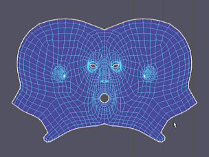

通过允许出于变形目的围绕 UV 创建晶格，将 UV 的布局作为组进行操纵。
若要打开“晶格工具”(Lattice Tool)，请从“UV 工具包”(UV Toolkit)的部分中选择它，或从“UV 编辑器”(UV Editor)菜单中选择。
选择“工具 > 晶格”(Tools > Lattice) >  时，在“工具设置”(Tool Settings)窗口中将显示以下选项。
时，在“工具设置”(Tool Settings)窗口中将显示以下选项。
晶格设置(Lattice Settings)
- 列(Columns)
-
为当前晶格操纵器指定列数。最小列数为 2，最大列数为 8。
- 行数(Rows)
-
为当前晶格操纵器指定行数。最小行数为 2，最大行数为 8。
- 衰减(Falloff)
-
指定晶格操纵器的影响级别或衰减值。
- 使用边界矩形(Use Bounding Rectangle)
-
如果启用该选项，那么当前晶格操纵器就无法延伸过外部边或目标几何体的边界。
- 显示移动操纵器(Show move manipulator)
-
指定选择晶格点时是否显示“移动”(Move)工具操纵器。
捕捉设置
晶格捕捉设置与受晶格影响的每个 UV 相关。需要在“UV 编辑器”(UV Editor)中启用“像素捕捉”(Pixel Snap)（），“UV 晶格工具捕捉设置”(UV Lattice Tool Snap Settings)才会有效果。- 放置(Placement)
- 选择控制点捕捉到的位置。
- 捕捉角(Snap Corner)
-
如果启用该选项，UV 晶格变形器的控制点就会捕捉到每个 UV 的角。
- 捕捉中心(Snap Center)
-
如果启用该选项，UV 晶格变形器的控制点就会捕捉到每个 UV 的中心。